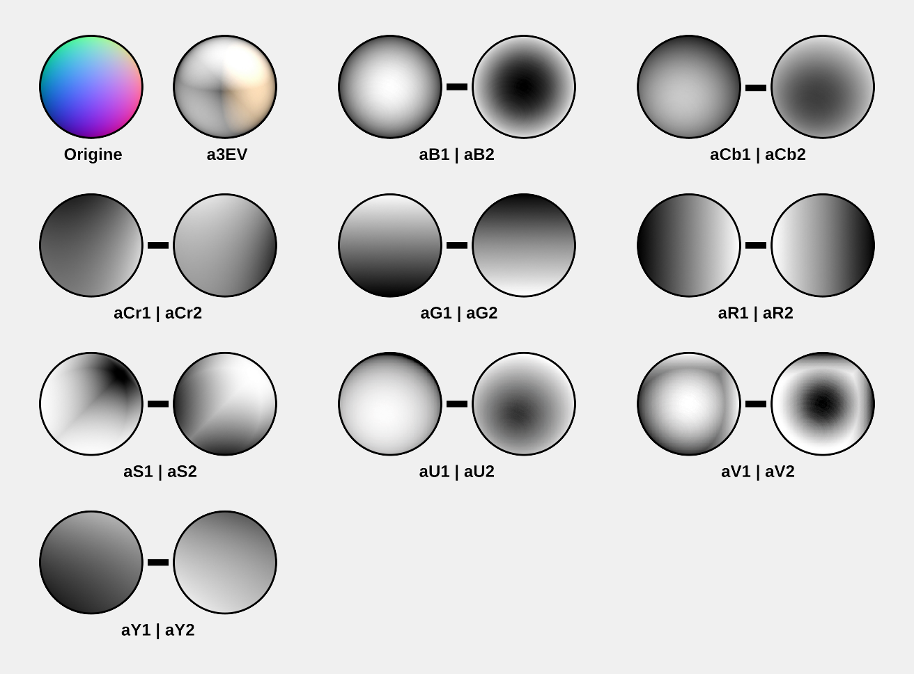
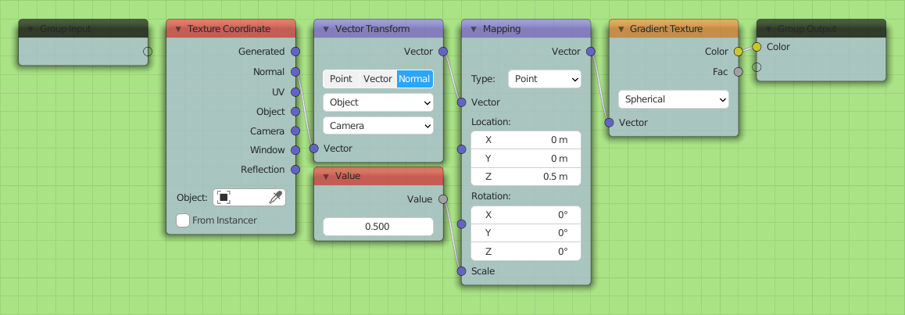

Définition
Les cartes relief transcrivent les variations d’orientation xyz d’un vecteur normal à la surface étudiée par rapport à un référentiel que l’utilisateur peut définir : le point de vue de la caméra (mode orthogonal au point de vue), une autre surface de référence moins détaillée (mode tangent), ou les axes xyz de la scène 3D (mode univers).
Code utilisé en fonction du type de carte relief :
- mode orthogonal au point de vue : NMC (Normal Map Camera)
- mode tangent : NMT (Normal Map Tangent)
- mode univers : NMW (Normal Map World)
Cette couche d'information permet de qualifier une surface
Mise en oeuvre
- Onglet 1 : Afficher la sphère témoin.
- Onglet 2 : Sélectionner le maillage, clic-gauche et `Shade Smooth`.
- Onglet 2 : Appliquer le matériau `R1_NMC`.
- Onglet 3 : Connecter `Ouput 1` avec `R1_NMC`. Casser toute autre liaison que celle-ci.
- Onglet 3 : Sélectionner le moteur de rendu EEVEE.
- Onglet 3 : Render all cameras.
Les images sont alors enregistrées dans le dossier à la racine du projet nommé `TEMP`.

Il est possible de créer des ombrages personnalisés dans Krita,
- Ouvrir `Cam-##_R1_NMC.png` dans Krita
- Créer un calque de filtrage : Carte (Map) / Matriçage de surface de Phong (Phong Bumpmap)
- Dans l'onglet `General Settings`, cocher `utiliser une normal map` (`use normal map`)
- Jouer avec les différents curseurs dans l'onglet `General Settings``et `Light Sources` jusqu'à obtenir l'effet souhaité
- Libre à vous d'adopter le nom le plus pertinent!
Liste des images produites et leurs caractéristiques
Structure du nom des fichiers générés :
[Nom complet du fichier décliné]_[Identifiant de l'information générée].jpg
Liste des fichiers :
- Cam-##_R1_NMC.png
- Cam-##_R1_NMC_B1.jpg : canal Bleu de l'espace RGB
- Cam-##_R1_NMC_B2.jpg : canal Bleu de l'espace RGB (négatif)
- Cam-##_R1_NMC_Cb1.jpg : canal Chrominance Bleu de l'espace YCbCr
- Cam-##_R1_NMC_Cb2.jpg : canal Chrominance Bleu de l'espace YCbCr (négatif)
- Cam-##_R1_NMC_Cr1.jpg : canal Chrominance Rouge de l'espace YCbCr
- Cam-##_R1_NMC_Cr2.jpg : canal Chrominance Rouge de l'espace YCbCr (négatif)
- Cam-##_R1_NMC_G1.jpg : canal Vert de l'espace RGB
- Cam-##_R1_NMC_G2.jpg : canal Vert de l'espace RGB (négatif)
- Cam-##_R1_NMC_R1.jpg : canal Rouge de l'espace RGB
- Cam-##_R1_NMC_R2.jpg : canal Rouge de l'espace RGB (négatif)
- Cam-##_R1_NMC_S1.jpg : canal Saturation de l'espace HSV
- Cam-##_R1_NMC_S2.jpg : canal Saturation de l'espace HSV (négatif)
- Cam-##_R1_NMC_U1.jpg : canal Chrominance Bleu de l'espace YUV
- Cam-##_R1_NMC_U2.jpg : canal Chrominance Bleu de l'espace YUV (négatif)
- Cam-##_R1_NMC_V1.jpg : canal Valeur de l'espace HSV
- Cam-##_R1_NMC_V2.jpg : canal Valeur de l'espace HSV (négatif)
- Cam-##_R1_NMC_Y1.jpg : canal Luminosité de l'espace YCbCr
- Cam-##_R1_NMC_Y2.jpg : canal Luminosité de l'espace YCbCr (négatif)
Note : Les images `Cb` et `U` sont toutes les deux qualifiées de Chrominance Bleu, mais respectivement des espaces de couleur YCbCr et YUV. L'aspect final n'est donc pas exactement identique bien que très similaire.
Les différents rendus générés automatiquement (sur une sphère) :

A l'issue de cette manipulation, une autre couche d'habillage est également produite :
- Cam-##_zH_Details.jpg : Cf. zH. Détails
Description du matériau (onglet 2)
Configuration générale :

Détail du noeud vert `Rouge`:

Détail du noeud vert `Vert`:

Détail du noeud vert `Bleu`:

Description du compositeur (onglet 3)
Les noeuds sont facilement explorables à travers l'interface Blender.
Ressources
La création des ombrages s'appuie sur la séparation des différents canaux d'une image principale. Les liens suivants sont une introduction à ces canaux.
- Concernant la chrominance
- Concernant la luminance
- Concernant la luminosité en colorimétrie
- Concernant l'espace de couleur RGB
- Concernant l'espace de couleur YCbCr
- Concernant l'espace de couleur YUV